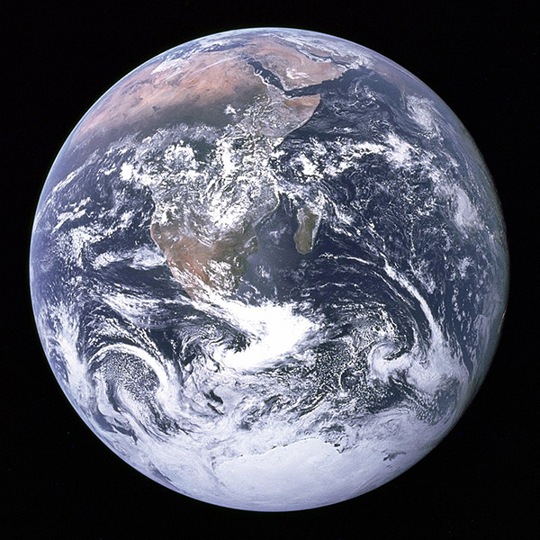
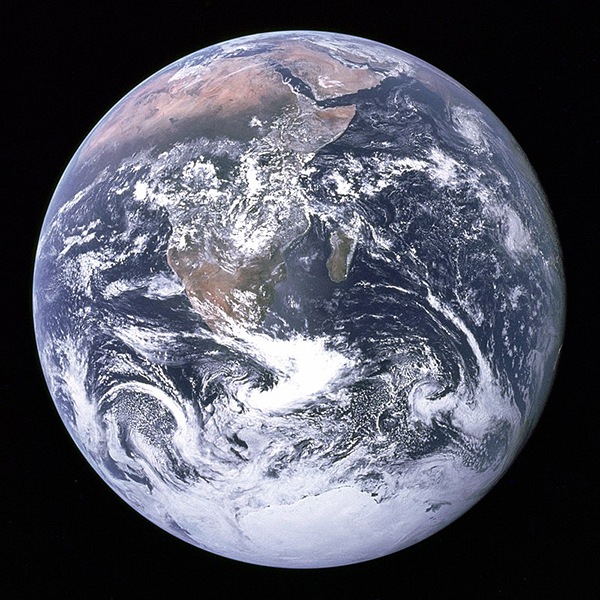

Planets Slideshow
Mercury
Mercury is the smallest and innermost planet in the Solar System. Its orbit around the Sun takes 87.97 Earth days, the shortest of all the planets in the Solar System. It is named after the Greek god Hermes (Ερμής), translated into Latin Mercurius Mercury, god of commerce, messenger of the gods, mediator between gods and mortals.
Venus
Venus is the second planet from the Sun. It is named after the Roman goddess of love and beauty. As the second-brightest natural object in the night sky after the Moon, Venus can cast shadows and can be, on rare occasion, visible to the naked eye in broad daylight. Venus orbits the Sun every 224.7 Earth days.
Earth
Earth is the third planet from the Sun and the only astronomical object known to harbor life. About 29% of Earth's surface is land consisting of continents and islands. The remaining 71% is covered with water, mostly by oceans but also lakes, rivers, and other fresh water.
Mars
Mars is a terrestrial planet with a thin atmosphere, with surface features reminiscent of the impact craters of the Moon and the valleys, deserts, and polar ice caps of Earth.
Jupiter
Jupiter is the fifth planet from the Sun and the largest in the Solar System. It is a gas giant with a mass one-thousandth that of the Sun, but two-and-a-half times that of all the other planets in the Solar System combined.
Saturn
Saturn is the sixth planet from the Sun and the second-largest in the Solar System. It is a gas giant with an average radius of about nine times that of Earth. Saturn is over 95 times more massive than Earth.
Uranus
Uranus is the seventh planet from the Sun. Its name is a reference to the Greek god of the sky, Uranus, who, according to Greek mythology, was the grandfather of Zeus (Jupiter) and father of Cronus (Saturn).
Neptune
Neptune is the eighth and farthest-known Solar planet from the Sun. In the Solar System, it is the fourth-largest planet by diameter, the third-most-massive planet, and the densest giant planet.